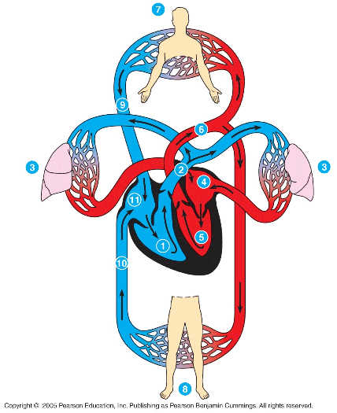

1
גילוי מחזור הדם
מגלנוס להארווי: איך תצפית, חשבון וניסוי הפילו תיאוריה שהחזיקה 1,500 שנה.
יחידת לימוד מקוונת. בכל שיעור יש מצגת, סימולציה ובוחן, וכל אחד מהם נפתח ישירות מכאן.

מגלנוס להארווי: איך תצפית, חשבון וניסוי הפילו תיאוריה שהחזיקה 1,500 שנה.
תרגול על איור לב אמיתי: שני המעגלים, עורק או וריד, וחילוף חומרים בנימים.
כמות הדם בגוף קבועה. איך היא מתחלקת בין האיברים במנוחה ובמאמץ?
היחידה מתבססת על חומרי מט״ח ומורחבת בחומרים נוספים. נבנתה על ידי חגית ברגמן.